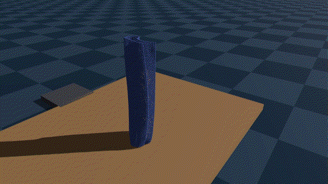
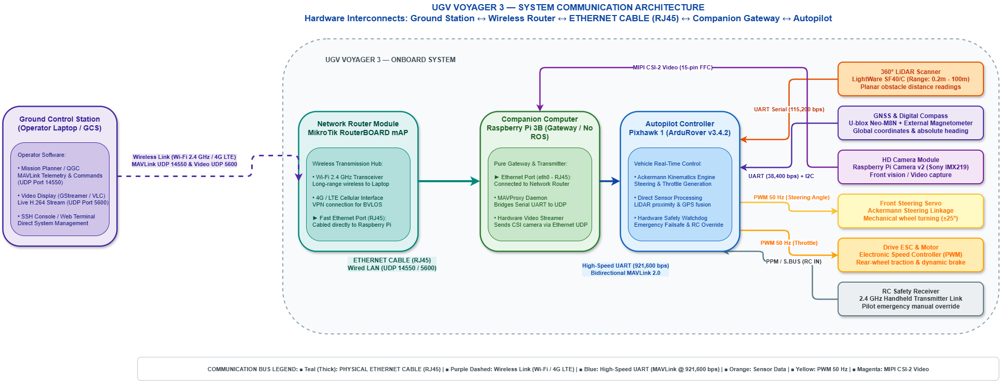

Featured Robotics & Vision Repositories
Clean, reproducible implementations complete with simulation benchmarks, evaluation videos, and full hardware architectures.

Reinforcement Learning + GenesisContinuous Soft Actor-Critic (SAC) reinforcement learning with multi-stage curriculum pacing for robotic cloth manipulation. Combines analytical $C^2$ Bézier nominal paths with learned residual Cartesian offsets to eliminate wrinkles and align dual-layer waistbands.

Field Robotics · Ackermann UGVAutonomous field rover with Ackermann kinematics (EU H2020 RAWFIE platform). Combines The Cube Black (Pixhawk 2.1) running ArduRover, a Raspberry Pi 3B companion gateway, a 360° LightWare SF40/C LiDAR, and native ROS 2 Humble integration for laser mapping.
 Computer Vision & Grasp Planning
Computer Vision & Grasp Planning
Reproduction of the CLASP semantic keypoint detection architecture for garment manipulation. Features a ResNet-50 backbone with spatial deconvolution heads predicting heatmap landmarks (waistbands, hems, crotch) to generate robust grasp poses.
 3D Vision & Geometry
3D Vision & Geometry
Structure from Motion pipeline for historical camera localization inside modern 3D reconstructions. Implements feature matching with SuperGlue, RANSAC epipolar filtering, Essential matrix decomposition, and linear triangulation.
Reproduction of the active 3D object exploration and topological mapping framework (Sun et al., 2016). Integrates Next-Best-View (NBV) frontier selection, volumetric occupancy grids, and topological graph extraction from real RGB-D sensor streams.